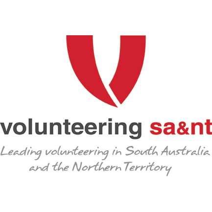
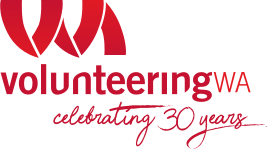

Welcome to the SUSTAINING VOLUNTEERING IN AUSTRALIA page
This page includes two tools for volunteer involving organisations. These tools, the Volunteer Convertibility Calculator and the The Recruitability Tool were developed as part of a three-year study funded by the Australian Research Council (ARC) titled, "Creating and sustaining a strong future for volunteering in Australia" (LP: 140100528)
Related publications
A select list of publications from this study is available below.
- Haski-Leventhal, D., Oppenheimer, M., Holmes, K., Lockstone-Binney, L., Alony, I., & Ong, F. (2018). Conceptualisation of volunteering among non-volunteers: Expanding definitions and dimensions using net-cost. Non-Profit and Voluntary Sector Quarterly. DOI: 10.1177/0899764018768078
- Haski-Leventhal, D., Meijs, L., Lockstone-Binney, L., Holmes, K., & Oppenheimer, M. (2017). Measuring volunteerability and the capacity to volunteer among non-volunteers: Implications for social policy. Social Policy & Administration. DOI: 10.1111/spol.12342
- Australian-first calculator developed to assist volunteer recruitment. William Angliss Institute, 3 Jul 2017.
- Volunteer researchers recognised: Thought Leaders Award at the 2016 Volunteering Victoria State Awards. William Angliss Institute, 7 Dec 2016.
- Why don't more people volunteer? Misconceptions don't help. The Conversation, 5 Dec 2016.
- Where have all the volunteers gone? The Conversation, 24 Sep 2015.
- Mex, Christel, (2018) Stepping up or stepping out? Recruitment and retention of volunteer leaders in grassroots associations, Third Sector Review, Vol 24, No 1. ISSN: 1323-9163.
Partner organisations
|
 |
 |
|  | ||
Research Team
Research assistantsWe acknowledge and thank the following Research Assistants for their invaluable work on the project:
|
|